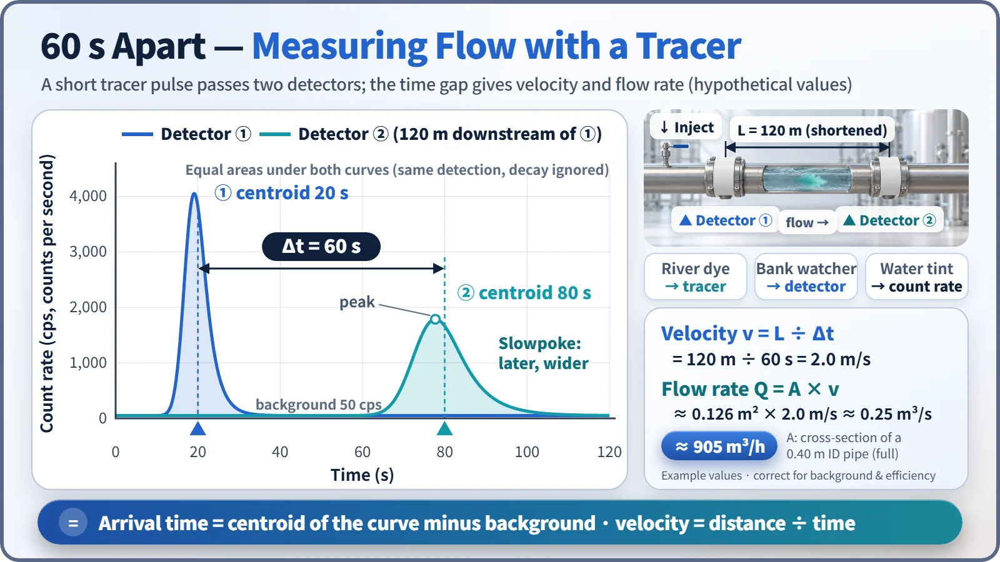
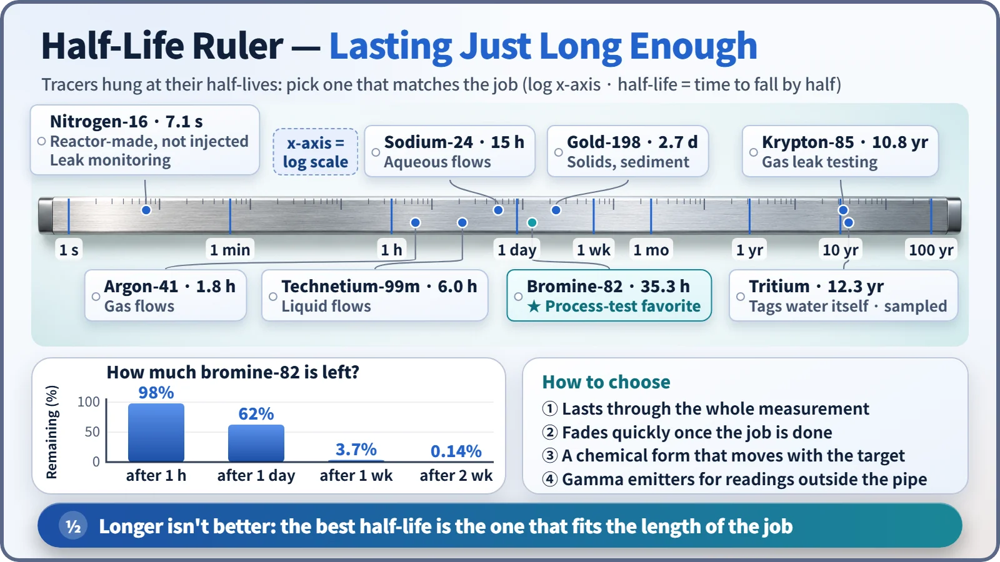

Society, Environment & the Future · 281
Like Dye in a River — How Radioactive Tracers Follow Flows You Can't See
A radioactive tracer is a chemically identical tag that travels with a flow, and detectors outside the pipe follow it.
A radioactive tracer is a tiny amount of a radioactive isotope that behaves chemically exactly like the material you want to watch. Mixed into a flow, it goes wherever the flow goes, and detectors follow its radiation to reveal where the material moves and how fast, even through a steel wall and without stopping the process. [2]
The person waiting downstream
Several kilometers of pipe run under a factory floor, and somewhere along the line it is leaking. Can you find the leak without digging up the floor? Inside a big tank that is running right now, is the liquid mixing evenly? Can you check without opening the lid? The answer to both is yes, and the trick is a lot like an old game.
People who map underground water in cave country pour bright green fluorescent dye into a stream that disappears into the ground, then wait at a spring a few kilometers away. If the spring turns green a few days later, the two places are connected, and the time it took tells you how fast the water moves.
Radioactive tracer technology does the same thing, with a radioactive isotope in place of the dye and a radiation detector in place of your eyes.
Blends in perfectly, shows up clearly
First, the tracer is chemically identical. Isotopes of the same element share the same arrangement of electrons, so they dissolve, stick and react in practically the same way. Radioactive bromine travels with water just like ordinary bromine; a label attached to an oil-soluble compound travels with the oil.
The first person to exploit this was the Hungarian-born chemist George de Hevesy. In 1913 he tried to separate a radioactive form of lead from ordinary lead and failed. Then he flipped the idea around: if the two can never be pulled apart, use the radioactive one as a tag that follows the lead. That idea led to the 1943 Nobel Prize in Chemistry. [1]
Second, a tiny amount is enough to see. A radiation detector can count individual decays one by one. An amount of bromine-82 that decays a billion times per second (1 gigabecquerel) weighs about 25 nanograms, roughly one forty-millionth of a gram. Add that to a process stream moving hundreds of tonnes an hour and the flow doesn't notice a thing. [5]
And unlike dye, gamma rays pass straight through steel, so detectors strapped to the outside of an opaque pipe can measure while the plant keeps running. [2]
Two detectors, sixty seconds apart
To measure how fast and how much is flowing, inject a short burst of tracer upstream and mount two detectors a known distance apart. As the tracer cloud passes each one, the count rate (radiation counts per second) rises and falls.
In a hypothetical example, the detectors are 120 meters apart. The average arrival time is 20 seconds at the first detector and 80 seconds at the second, so the transit time is 60 seconds.
Velocity v = distance L ÷ transit time Δt = 120 m ÷ 60 s = 2.0 m/s
If the pipe runs completely full at a steady rate with an inner diameter of 0.4 meters, its cross-section is about 0.126 square meters, so the flow rate is Q = A × v ≈ 0.25 m³/s, or about 905 cubic meters per hour.

| Step | Calculation | Result |
|---|---|---|
| Transit time | 80 s − 20 s | Δt = 60 s |
| Velocity | 120 m ÷ 60 s | 2.0 m/s |
| Pipe area (0.40 m inner diameter) | π × (0.20 m)² | ≈ 0.126 m² |
| Flow rate | 0.126 m² × 2.0 m/s | ≈ 0.25 m³/s ≈ 905 m³/h |
The downstream curve is lower and wider because the tracer spreads forward and backward as it travels. Its tail also stretches out behind, so the peak sits ahead of the average. That is why arrival time comes from the centroid of the whole curve after subtracting background, not from the peak. [2]
Leaks, idle corners and poor mixing
Finding leaks. Put tracer into the fluid on one side of a heat exchanger; a signal at the outlet on the other side means a leak. For a buried pipeline, send tracer through and then flush the line. Tracer stays only in the soil where it escaped, and the signal spikes there. [3]
Residence time distribution. The curve shape at the outlet of a reactor vessel or settling tank shows whether part of the flow is short-cutting straight through or whether stagnant corners are sitting idle. [2]
Checking mixing. When the signals at several points in a tank converge on the same value, the contents are fully mixed.
Tracers also follow groundwater and rivers, and track where sand on a harbor floor is carried. Putting artificial radioactive material into the open environment requires strict regulatory approval, so dyes or isotopes already present in nature are often used first. [4]
Nuclear power plants even have a tracer the reactor makes itself: nitrogen-16, formed when oxygen in the cooling water is struck by neutrons. Its half-life is just over 7 seconds. If a crack opens in a steam generator tube and reactor-side water leaks into the steam side, nitrogen-16 shows up in the main steam line, acting as a real-time leak alarm. Applied inside the human body, the same principle becomes nuclear medicine diagnostics.
A half-life that's "just long enough"
The most important factor in choosing a tracer is its half-life. Too short and it is gone before the measurement ends; too long and it lingers after the job is done. The usual choice is a half-life several times longer than the measurement.
With bromine-82 (half-life about 35 hours), 98% is still there at the end of a one-hour measurement, about 3.7% after a week and 0.14% after two weeks. A process lasting a few hours might use technetium-99m (6 hours); gas flows might use argon-41 (about 1.8 hours). [5]

The type of radiation matters too. Measuring from outside a pipe needs gamma rays that penetrate steel. Tritium, which can label water molecules themselves, emits only weak beta radiation, so samples have to be drawn and analyzed.
A tag, not a flashlight
Radiographic testing, a form of non-destructive inspection, uses a sealed source to shine radiation through an object and see inside. A tracer is mixed into the flow and followed. And using a tracer does not leave a product permanently radioactive: only trace amounts are used, short-lived nuclides are chosen, and the amounts used and released are managed within limits licensed by the regulator.
Key takeaways
A radioactive tracer is a tiny tag attached to a flow: chemically invisible, unmistakable to a detector. Just as dye reveals a hidden underground stream, the tracer reveals the flow on the far side of a steel wall, without stopping anything, as long as its half-life fits the length of the job.